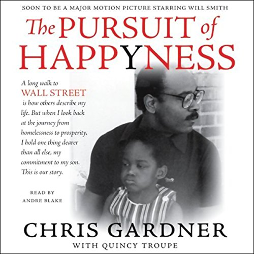

The best hobby i started in recent years was gardening.Initially i started with few flower pots later on entiremy home filled with different kind of flowers later slowly stated guardening vegetable also.most of the times will follow you tube channels and do some own experiments finally am become master in guardening.now a days am giving suggestion to my neighbor on guardening
i read a this book in one of my saddest failures.i taught i am the one who doing worst in my life after reading this book every perspective life was changed.this story about Chris Gardener tells the story of a struggling salesmen who never gave up trying to find true happiness for himself and his son.when i reading this book was cried and and i taugh he may give up his life due to struggles but he always fight like warrior finally he become succesful business man.
